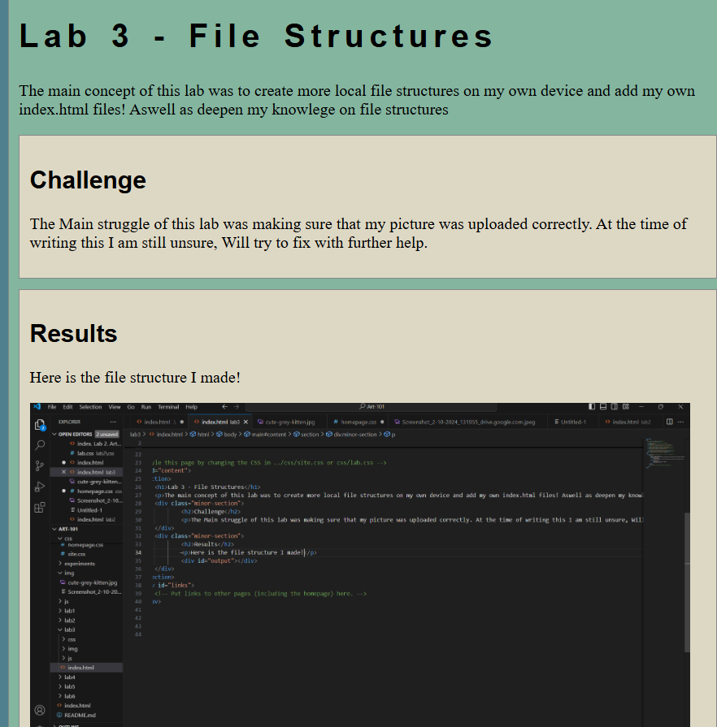
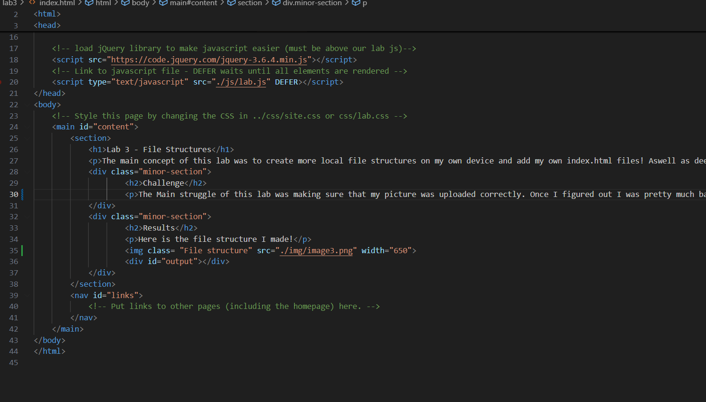

Lab 14 - Debugging Tools and Strategies
Challenge
The challange is to see if the student can properly impliment Loops within their website.
Problems
No problems just solving them.
Results
This is my debugging of Lab 3!
Debugging
The labs that I mainly went through to debug was Lab3. I felt that I really struggled in that lab, but now that I have a better understanding of using VScode, I debugged it!
 